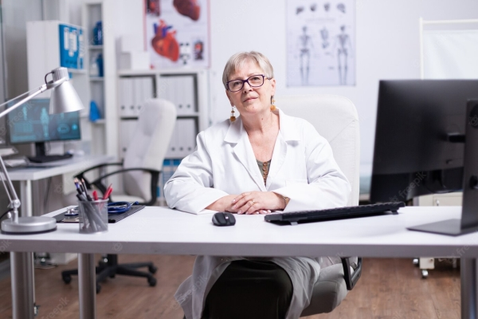

cyberdyne systems
Cyber Dynamics Systems initially began as a manufacturing corporation at 18144 El Camino Real, Sunnyvale,
California. Founded in the early 1980s, its products were computers and processors, as well as some smaller parts
producer for larger manufacturers of high tech equipment. As of 1984, the small company owned a factory.
32
Facilities around the globe
$136 bn.
Consilidated sales
Leadership
Bertram Hollister
CEO and CFO
As CEO, Bertram presides over Cyber Dynamic Systems and its respective divisions. Under his leadership, the
company has grown from under $100 bn. in revenue to almost twice its size with more than 35 000 employees
and has acquired over 70 companies.
Dr. Miles Dyson
Cybernetics expert
Dr. Miles Dyson is an expert in cybernetics at Cyberdyne Systems as the Director of Special
Projects. He is the man most directly responsible for the creation of Skynet. Founder of Genisys.
MIT graduate, married and has a son.

Dr. Serena Kogan
Head of Biological Studies
Dr. Serena Kogan is a geneticist and head of Biological Studies. Inventor of the Hybrid Human technology.
Leader of Project Angel - her research lead to the creation of the T-800, T-1000 and the TX models.
Kimberley Duncan
Community Relations
Kimberlyn Duncan is the Director of Community Relations and Media Control at Cyberdyne. She is the daughter
of Antonne Jr. and Schrylean Duncan. She has one younger sister named Kiersten. Graduated from Brigham young
university and has Bachelor’s Degree in Marketing. Exhibits professionalism, professional attire and
demeanor at all times. Go-to person.